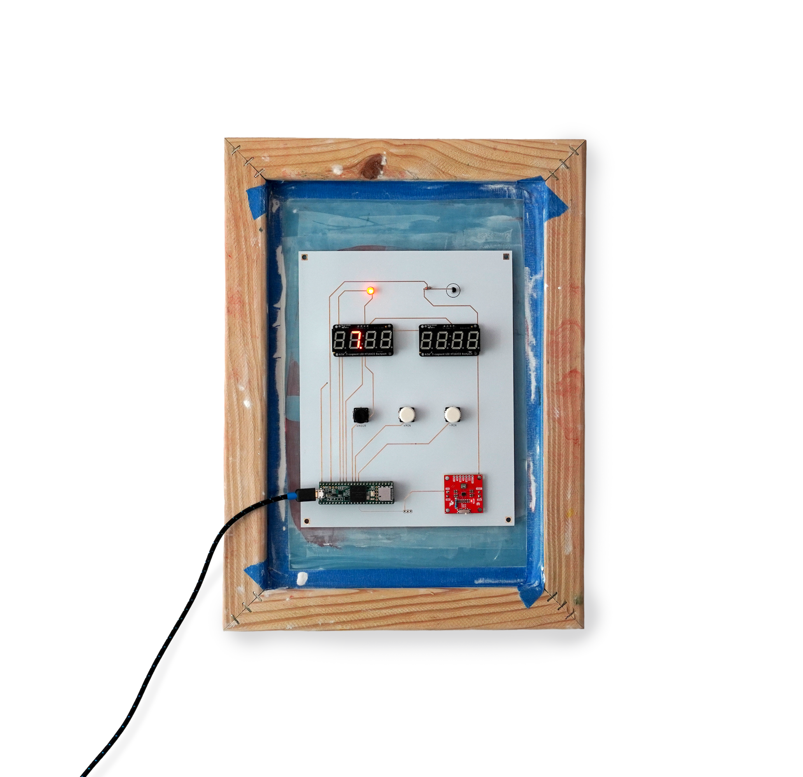

2026
A strange clock that explores how reliability emerges from randomness.
A handbuilt circuit causes electrons to quantum tunnel across a nanometers-thick barrier. These random quantum events cause the duration of each "second" to be different. But over minutes and hours, the clock converges to tell accurate time.1
EXHIBITIONS
FERMILAB NATIONAL ACCELERATOR LABRATORY